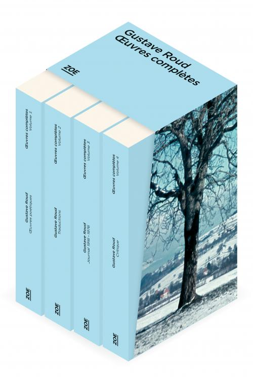
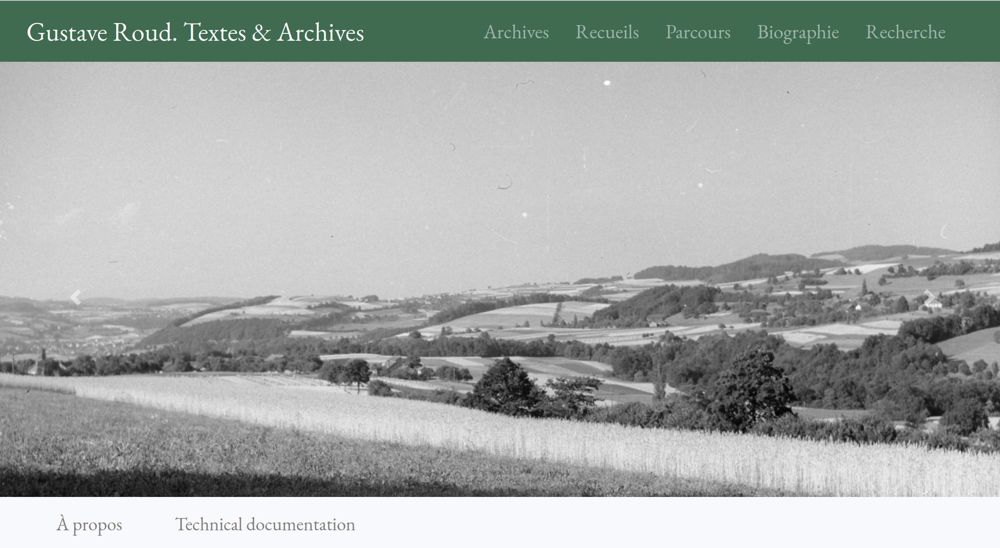
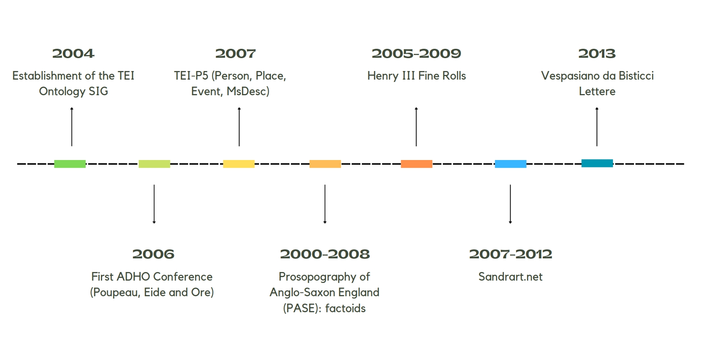
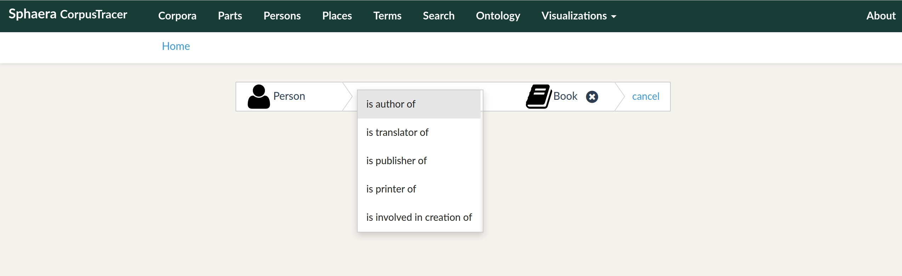
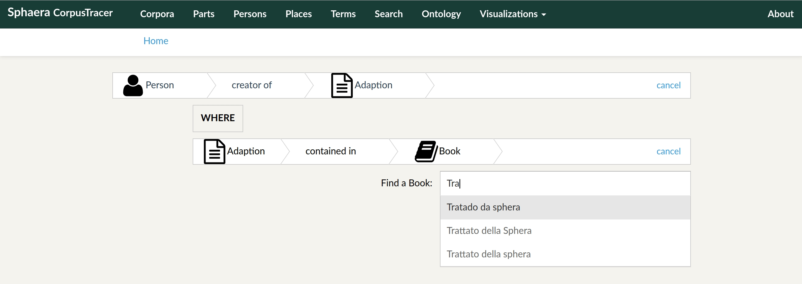

Semantic web and scholarly editions: where are we?
Towards a philological web of data
ATNU Virtual Visiting Speaker series
Elena Spadini (University of Basel)
Materials available at https://doi.org/10.5281/zenodo.7867906
- Background
- What is a semantic edition
- A tentative state-of-the-art
- The first decade
- Extension of indices
- Interpretation, provenance and knowledge creation
- Resources
- Examples
- Towards a philological web of data
- RDF stemmata: reuse of OpenStemmata
- Genetic networks and GENO
- Conclusions
Background
|
Gustave Roud,
Projet FNS, 2017-2021
Direction : Claire Jaquier et Daniel Maggetti Collaborateurs et collaboratrices : Alessio Christen, Bruno Pellegrino, Elena Spadini, Julien Burri, Raphaëlle Lacord |
  |
What is a semantic edition
Web of data
From web of documents to web of data, for humans and machines. Tim Berners-Lee and collaborators in 2001.
Statements expressed in RDF triples (subject, predicate, object). URIs, unique identifiers for resources (persons, concepts, books, web pages, etc.), can be used at each position of the triple.
Semantic edition
- uses persistent URIs to identify resources and the relationships between them [...];
- uses existing ontologies for the organization of information [...];
- serves data through content negotiation and makes them searchable through a SPARQL endpoint equipped with a graphical interface.
Daquino, M., Dello Buono, M., Giovannetti, F., & Tomasi, F. (2020). Paolo Bufalini, Appunti (1981-1991) [Semantic Scholarly Digital Edition]. Digital Humanities Advanced Research Centre (/DH.arc), https://doi.org/10.6092/unibo/amsacta/6415
A tentative state of the art
The first decade of SW technologies for editions
Extension of indices
- identify authorities, including implied ones (human and machine inferences)
- express unambiguously the relationships between them
Impact on search functionalities (example of "the wife of")
See Eide and Ore 2006, Ciula et al. 2008, Tomasi 2012
Example of expressing relationships between entities
http://db.sphaera.mpiwg-berlin.mpg.de/resource/:search
Example of expressing relationships between entities
http://db.sphaera.mpiwg-berlin.mpg.de/resource/:search
Interpretation and knowledge creation
- separation of interpretation and source
- explicit the semantic
Interpretation and knowledge creation
- separation of interpretation and source
- explicit the semantic
Interpretation, provenance and knowledge creation
Context, from archival science, means at least:
- creator
- provenance
- position in the hierarchy/graph
Resources
(MORE OR LESS) Semantic Editions
First decade: Henry III Fine Rolls Project (history), Sandrart.net (art history), Sharing Ancient Wisdoms (text collection, classics), Vespasiano da Bisticci Lettere (Renaissance humanism, codicology).
Second decade: Symogih XML portal (history), Geovistory editions (history), Digital Edition Publishing Cooperative for Historical Accounts (history), Paolo Bufalini's Notebook (contemporary history, philology), National Edition of Aldo Moro's Works (contemporary history).
Ontologies used in these editions
Other potentially interesting ontologies and vocabularies
How to
XML to RDF: XSLT, LIFT.
Ontology building: Protege.
Research and publication environments: GAMS, Geovistory.
Encoding and annotation: LEAF-Writer, Recogito.
Human consumption
From text- to data-centric approach
Interfaces: content-oriented navigation (indices, maps, timeline), multiple forms of representation (already in the pre-digital assertive editions), faceted search.
SPARQL endpoints: half of the editions reviewed, 4/9.
Examples
Digital Edition Publishing Cooperative for Historical Accounts (DEPCHA), dir. by Georg Vogeler, Centre for Information Modeling – Austrian Centre for Digital Humanities (financed by the The Andrew W. Mellon Foundation), CC-BY 4.0. Permalink: http://gams.uni-graz.at/depcha
Daquino, M., Dello Buono, M., Giovannetti, F., & Tomasi, F. (2020). Paolo Bufalini, Appunti (1981-1991) [Semantic Scholarly Digital Edition]. Digital Humanities Advanced Research Centre (/DH.arc). Project homepage | DOI
Left out
Linguistics, musicology, heraldry, prosopography, and more ...
→ Distributed Text Services (DTS)
Towards a philological web of data
Critical and genetic editions
Use of computational tools in the Humanities involves making explicit what is often implicit
→ create a data model and populate it, operationalise
The ordering of witnesses is often an implicit process, also in digital textual scholarship (the collation process is a step before or after the ordering itself).
RDF stemmata: reuse of OpenStemmata
RDF-OpenStemmata
https://github.com/elespdn/RDF-OpenStemmata
- transform DOT Graphviz transcriptions of the stemmata from OpenStemmata into RDF, according to a test ontology, to enrich their semantic structure
- query the RDF data with SPARQL to gain new insights into the dataset
Snippet of the RDF data
Genetic networks and GENO
|
Gustave Roud,
Projet FNS, 2017-2021
Direction : Claire Jaquier et Daniel Maggetti Collaborateurs et collaboratrices : Alessio Christen, Bruno Pellegrino, Elena Spadini, Julien Burri, Raphaëlle Lacord |
Three ways to compose his texts
- A. Classical genesis: text and avant-textes
- B. From the diary: diary entries, genetic materials a posteriori
- C. Genesis from previously published texts: reuse and continuation, post-editorial or epi- genesis
Exemple.
Air de la solitude
From the document to the network


GENO, an ontology for the field of Genetic Criticism and Editing.
Conclusions
Combination of XML/TEI and RDF
is becoming mainstream or at least widely accepted and sometimes practicedAdvantages of using a SW approach in scholarly editing
- data is identifiable
- model is explicit
- query the semantic structure
- interpretation and text
- multilingualism
- machine readable
- linked data
- think beyond the document
- from digital library to knowledge graph
Thank you.
Bibliography
Slides: https://doi.org/10.5281/zenodo.7867906
elena.spadini@unibas.ch